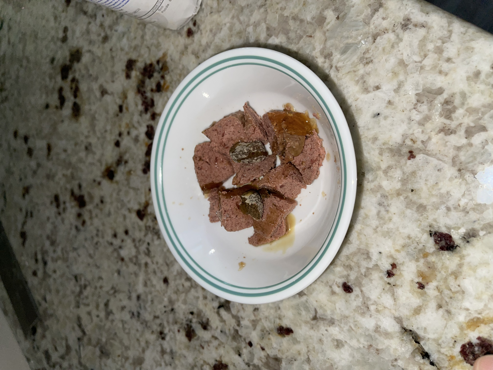

Recipe for Boos Breakfast

What is Boos Breakfast?
Boos Breakfast is a mix of his food, medicine, vitamins, and love.
Ingredients.
-
1/2 Cesar with Lamb Dog food
- 1 Zesty Paws Core Elements Aller-Immune Bites
- 1oz Rx Vitamins for Pets Liquid Nutricalm.
Directions.
- Use a spoon to scoop out half of the Cesar with lamb, and place into a bowl.
- Grab one Aller-immune bite. Break it in half, and place into bowl.
- Drizzle 1oz of Liquid Nutricalm on to meal.